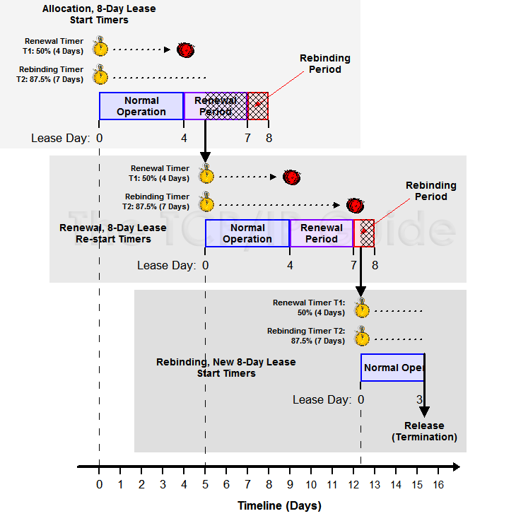

DHCP Server
環境：Ubuntu 16.04 (DigitalOcean)
DHCP 的運作原理，可以參考鳥哥
這邊簡單紀錄一下 Life Cycle 的部份
- Allocation：若一個 Client 尚未有任何租約，就向 Server 發送 allocation 的請求。
- Reallocation：若一個 Client 已經向 Server 申請租約，當 Client 重啟後，會向 DHCP Server 發送 reallocation，Server 會重新發送租約給 Client。整個過程類似 allocation，但速度更快。
- Normal Operation：當租約工作正常，且 Client 用分配的 IP 在 “main part” 做操作。
- Renewal：當經過租約的一定時間後，Client 會嘗試和 Server 要求 renew 租約，來延長這個 IP 的使用時間。
- Rebinding：若 Renewal 失敗(例如網路問題)，Client 會嘗試丟出 rebinding 的信息給任何可使用的 DHCP Server，來延長其租約。
- Release：Client 決定不要再用這個 IP 了，所以發送 release 給 Server，叫 Server 中止租約。
Life Cycle 的流程圖：(圖片來源)

安裝 DHCP Server
1 | sudo apt-get install isc-dhcp-server |
設定網卡介面
在 /etc/default/isc-dhcp-server 內，設定 INTERFACES
1 | INTERFACES="lxcbr0" |
設定 DHCP config
/etc/dhcp/dhcpd.conf (Linux man page)
1 | option domain-name "kaiiiz.nctucs.net"; |
設定完成後重啟 dhcp
1 | sudo systemctl restart isc-dhcp-server |
測試
1 | lxc-attach -n hosta |
進入 hosta
1 | ifconfig |
目前尚未和 Server 申請租約
1 | dhclient |
申請租約
1 | ifconfig |
申請成功